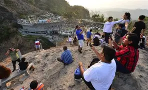
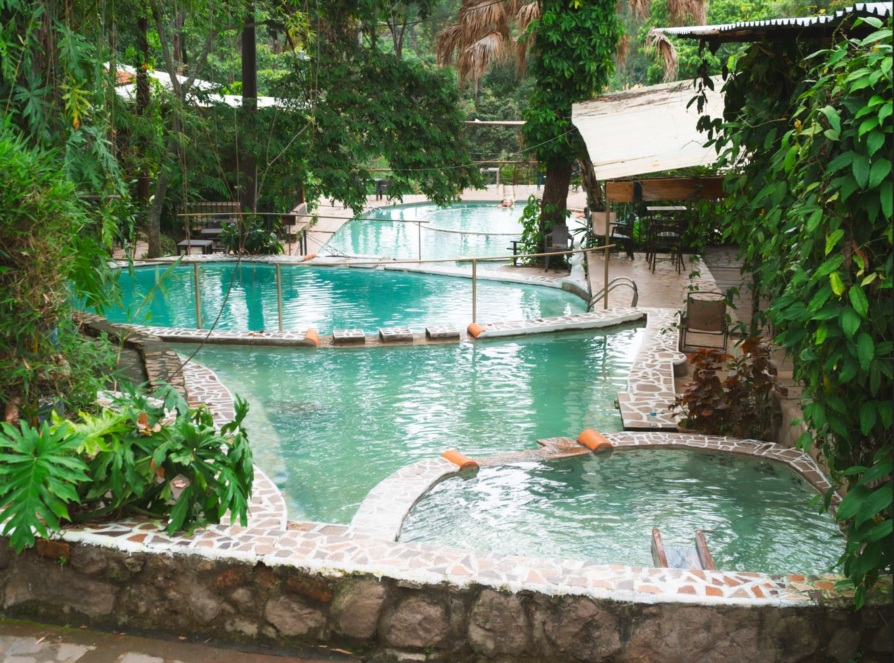

Puerta de diablo
La Puerta del Diablo es mucho más que un simple mirador: es un sitio con historia, leyendas, naturaleza y actividades al aire libre, lo que la convierte en una de las escapadas favoritas cerca de San Salvador.
La Puerta del Diablo es mucho más que un simple mirador: es un sitio con historia, leyendas, naturaleza y actividades al aire libre, lo que la convierte en una de las escapadas favoritas cerca de San Salvador.

El lago de Ilopango es el lago natural más grande de El Salvador, situado a pocos minutos de la capital entre los departamentos de San Salvador, Cuscatlán y La Paz. Popular destino turístico para deportes acuáticos, restaurantes y paisajes naturales.

Termales de Santa Teresa es un reconocido resort, spa y balneario geotérmico situado en Ahuachapán, El Salvador. Destaca por ofrecer más de 30 piscinas de aguas termales naturales, medicinales y azufradas, provenientes de ausoles, rodeadas de naturaleza, ideales para la relajación, la salud y el turismo familiar.
Los Planes de Renderos, situados al sur de San Salvador, son un cantón de Panchimalco de clima fresco, famoso por ser un destino turístico clave. Destacan por el Parque Balboa, el Parque de la Familia y la Puerta del Diablo, ofreciendo miradores escénicos, restaurantes de pupusas y naturaleza.